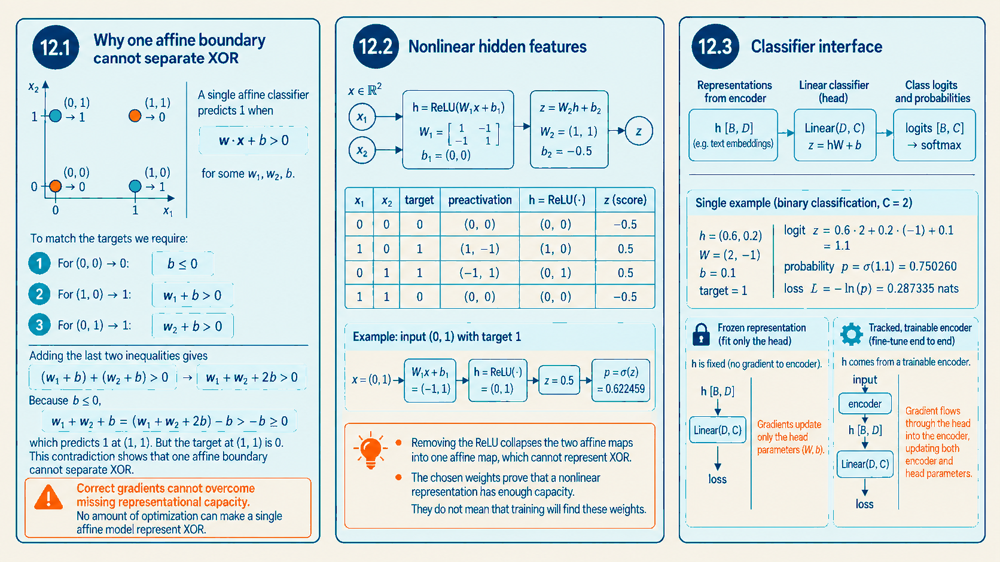
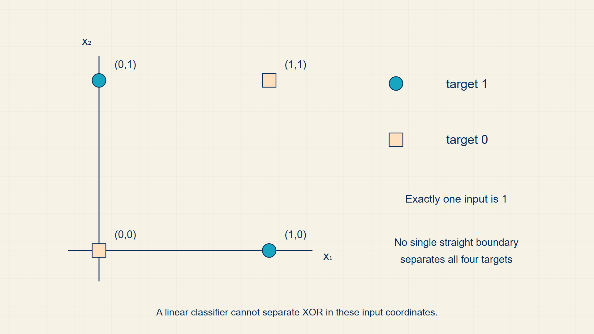

12 Activation Functions: Nonlinear Features for Classification
A correctly calculated gradient cannot fit labels that the model cannot represent. One affine boundary fails on some patterns even when optimization works as intended. Hidden nonlinear transformations can create features that a final linear classifier separates.

12.1 Why one affine boundary cannot separate XOR
Four binary inputs need labels based on whether their two coordinates differ. The target is 1 when exactly one coordinate is 1, and 0 otherwise. This is the exclusive-or rule, abbreviated XOR. Its positive cases \((1,0)\) and \((0,1)\) occupy opposite corners from the negative cases \((0,0)\) and \((1,1)\).
Suppose an affine classifier predicts 1 when \(w_1x_1+w_2x_2+b>0\), and predicts 0 otherwise. Correctly classifying \((0,0)\) requires \(b\leq0\). The two positive cases require \(w_1+b>0\) and \(w_2+b>0\).
Adding these inequalities gives \(w_1+w_2+2b>0\). Since \(b\leq0\), the score at \((1,1)\) satisfies \(w_1+w_2+b>0\). That contradicts its target 0. Moving the single boundary cannot remove this conflict.
A hidden representation is an intermediate feature vector produced inside a model. A classifier head maps that representation to output scores. Changing the intermediate features can remove a separation problem that adjusting the original boundary cannot solve.
The probability transform and classification loss can remain the same as in logistic regression. The new capacity comes from the representation before the head. A construction must show that capacity rather than infer it from additional layers alone.
12.2 Hidden nonlinear features and a complete XOR construction
For XOR, a useful intermediate distinction is which input coordinate exceeds the other. Two hidden units can detect those alternatives before the final score combines them.
An activation function transforms a hidden unit’s score, commonly with a nonlinear rule. Given input column \(x\in\mathbb R^D\), a hidden layer of width \(H\) computes
\[ h=\phi(W_{1}x+b_{1}) \tag{12.1}\]
Here \(W_1\) has shape \([H,D]\) and \(b_1\) has shape \([H]\). This equation treats input \(x\) as a column vector, so output coordinates index the rows of \(W_1\). The affine result \(a=W_1x+b_1\) is the preactivation. Applying \(\phi\) gives the hidden activation vector \(h\) of shape \([H]\).
ReLU, the rectified linear unit, retains positive preactivations and sets negative ones to zero:
\[ h_{i}=\max(0,a_{i}) \tag{12.2}\]
Its derivative is 1 for a positive input and 0 for a negative input. The derivative does not exist at zero. PyTorch uses zero there in its backward rule. This convention permits execution but does not make the mathematical corner differentiable.
The output layer combines hidden features:
\[ z=W_{2}h+b_{2} \tag{12.3}\]
For \(C\) outputs, \(W_2\) has shape \([C,H]\), \(b_2\) shape \([C]\), and \(z\) shape \([C]\). A multilayer perceptron, abbreviated MLP, composes affine layers with nonlinear activations. It can learn these intermediate features by backpropagating the task loss.
For multiclass scores \(f_\theta(x_i)\), the mathematical training objective is
\[ \min_{\theta}\frac{1}{n}\sum_{i}\operatorname{CE}\!\left(\operatorname{softmax}(f_{\theta}(x_{i})),y_{i}\right) \tag{12.4}\]
There are \(n>0\) labeled examples, and \(\theta\) collects the layer parameters. The mathematical cross-entropy here receives a probability vector and target \(y_i\). In code, nn.CrossEntropyLoss receives raw logits and performs the corresponding stable computation. Applying softmax first would change that API’s input contract.
Example: All four XOR decisions
Choose \(W_1=\begin{bmatrix}1&-1\\-1&1\end{bmatrix}\) and \(b_1=(0,0)\). Then \(a=(x_1-x_2,x_2-x_1)\) and \(h=(\max(0,a_1),\max(0,a_2))\).
Choose output weights \((1,1)\) and bias \(-0.5\), giving \(z=h_1+h_2-0.5\). Predict 1 for \(z>0\) and 0 otherwise.
| Input | Target | Preactivation | Hidden vector | Score | Decision |
|---|---|---|---|---|---|
| \((0,0)\) | 0 | \((0,0)\) | \((0,0)\) | \(-0.5\) | 0 |
| \((1,0)\) | 1 | \((1,-1)\) | \((1,0)\) | \(0.5\) | 1 |
| \((0,1)\) | 1 | \((-1,1)\) | \((0,1)\) | \(0.5\) | 1 |
| \((1,1)\) | 0 | \((0,0)\) | \((0,0)\) | \(-0.5\) | 0 |
Conclusion: The two inputs with target 0 both become \((0,0)\). The inputs with target 1 activate different hidden coordinates. Their sum separates all four cases with the stated threshold. These are chosen weights proving capacity, not a recorded result of training from random initialization.
The same construction lets us check which hidden parameters receive a learning signal. For input \((0,1)\), the specified weights give preactivation \((-1,1)\), hidden output \((0,1)\) and logit 0.5. The diagram places XOR labels beside the hidden nodes. The numerical calculation here specifies the nonlinear operation.

For input \((0,1)\) with target 1, the logit 0.5 gives probability \(\sigma(0.5)\approx0.622459\). Using §8.1’s binary cross-entropy with this sigmoid output, §8.4’s derivative gives \(dL/dz=p-y\approx-0.377541\). Both output weights equal one, so each hidden-output derivative equals the logit derivative. ReLU then passes it through the positive second preactivation and gives zero at the negative first preactivation.
The hidden preactivation gradient is therefore \((0,-0.377541)\). The first row of \(W_1\) receives zero gradient, while its second row receives \((0,-0.377541)\) after multiplication by the input coordinates. The hidden bias has gradient \((0,-0.377541)\) as well. These values connect the nonlinear forward trace to Chapter 11’s derivative chain rule. They describe one example’s update signal, not how reliably training finds the four-case solution.
Removing the activation loses the separating capacity shown in the four-case table. Two compatible affine maps satisfy
\[ W_{2}(W_{1}x+b_{1})+b_{2}=(W_{2}W_{1})x+(W_{2}b_{1}+b_{2}) \tag{12.5}\]
Distributing \(W_2\) gives one combined matrix \(W_2W_1\) and bias \(W_2b_1+b_2\). Therefore, adding affine depth alone still leaves the XOR contradiction from §12.1.
Example: A separate hidden-score calculation
A positive hidden value alone does not decide the class, because the output weight determines its contribution. Suppose one layer produces preactivations \(a=(-2,3)\). ReLU gives \(h=(0,3)\). With output weights \((1,-1)\) and zero bias, \(z=1(0)+(-1)(3)=-3\).
Conclusion: A positive hidden value need not favor the positive class. The output weight determines its contribution. This example uses different output weights from the XOR construction.
The choice of activation changes both the values passed forward and the gradients passed back. The sigmoid from §6.1 maps a score into \((0,1)\), which suits a binary output probability. Used inside a hidden layer, its slope becomes small at large positive or negative inputs. Tanh, the hyperbolic tangent, maps into \((-1,1)\) and has slope \(1-\tanh^2(a)\), so it also saturates at large magnitudes while retaining the input’s sign. ReLU has slope 1 on its positive side, but zero on its negative side. A dead ReLU unit receives only negative preactivations on the relevant examples and therefore gets no incoming-weight gradient from them through that activation. Its behavior can change if other inputs or upstream changes move it into the positive region.
Transformer feed-forward layers may instead use smoother gates. GELU multiplies \(a\) by \(\Phi(a)\), the standard normal cumulative probability at \(a\).1 SiLU multiplies \(a\) by \(\sigma(a)\), the sigmoid at \(a\).2 Both produce graded negative outputs rather than ReLU’s hard zero and remain unbounded on the positive side, unlike sigmoid and tanh. They require more numerical work than a simple maximum. Their behavior differs, so the choice depends on the model design and task. §17.4 applies GELU and SiLU to transformer feed-forward designs, including the two-branch SwiGLU gate.
Trainable hidden units also need suitable initial values. If interchangeable units have identical incoming and outgoing weights, they produce equal activations and equal gradients. Deterministic updates preserve that symmetry. Different initial values allow the units to learn different features.
Scale is a separate concern. Large initial weights can amplify activations or place sigmoid units in regions with small derivatives. Across many layers, initial weights close to zero can shrink signals and gradients at each successive transformation. Initialization schemes use layer widths and activation choices to control these effects.3 Wider layers increase parameter and activation costs without guaranteeing easier fitting or better generalization.
To compare initializations, use reproducible random seeds and hold the data, architecture, optimizer, and update budget fixed. Record activation ranges, gradient behavior, and validation results. A seed controls the random generator it initializes. Repeatability also depends on the software, hardware and operations used. Neither a seed nor a repeated result establishes that one initialization is better.4
12.3 A classifier interface for supplied representations
The XOR construction separates hidden features from the final score. The construction’s final scoring layer is a classifier head. It accepts a fixed-width vector regardless of how those coordinates were obtained. A document’s count features from Chapter 4 are another possible input.
For representation \(h\in\mathbb R^D\), the head computes
\[ z=W_{c}h+b_{c} \tag{12.6}\]
With \(C\) outputs, \(W_c\) has shape \([C,D]\) and \(b_c\) shape \([C]\). A batch implementation accepts \([B,D]\) and returns \([B,C]\). nn.Linear(D, C) stores this output-by-input matrix and applies it to each row.
A linear head has no hidden nonlinear layer of its own. An MLP head adds transformations such as those in §12.2 before its final scores. nn.Sequential can compose nn.Linear and nn.ReLU operations. The output remains logits for the matched classification loss.
Example: One supplied vector and a binary head
Take \(h=(0.6,0.2)\), \(W_c=(2,-1)\), bias 0.1, and positive target 1. The logit is \(2(0.6)-0.2+0.1=1.1\). Sigmoid gives approximately 0.750260106 and the unrounded loss is approximately 0.287335325 nats.
Conclusion: The supplied vector determines the head’s two input coordinates. The head and loss are checkable without assuming that these coordinates came from a trained text encoder.
The runnable PyTorch code sets the same head weights explicitly and prints its logit and stable binary loss.
Code example: A linear classifier head for a supplied two-coordinate vector
import torch
import torch.nn.functional as F
h = torch.tensor([[0.6, 0.2]]) # [batch, features]
head = torch.nn.Linear(2, 1)
with torch.no_grad():
head.weight[:] = torch.tensor([[2.0, -1.0]])
head.bias[:] = 0.1
logit = head(h)
label = torch.ones_like(logit)
loss = F.binary_cross_entropy_with_logits(logit, label)
print(logit, loss)The logit and label both have shape [1,1], and the mean loss has scalar shape []. The code implements a linear head, not a complete MLP or text-representation training procedure.
An encoder computes a representation from an input. If a trainable encoder produces \(h\) through tracked operations, the same loss can propagate into its parameters. If the representation is frozen, only the head is fitted. Chapter 13 supplies token lookup and aggregation. Chapter 14 supplies a context-prediction objective. The full AG News protocol belongs in §24.2. A token sequence raises the next representation question: which trainable coordinates should the network receive for each token?
Chapter checkpoint
Could two affine layers without an intervening activation solve XOR? Does the successful four-case construction show that random initialization will train successfully?
Answer: The affine layers combine into one affine map, so the same separation contradiction remains. The construction proves that suitable nonlinear features can represent the labels. Training success depends on the objective, initialization, updates, and data.
Hendrycks, D., & Gimpel, K. (2016). Gaussian Error Linear Units (GELUs). arXiv:1606.08415.↩︎
Elfwing, S., Uchibe, E., & Doya, K. (2018). Sigmoid-Weighted Linear Units for Neural Network Function Approximation in Reinforcement Learning. Neural Networks, 107, 3–11.↩︎
Glorot, X., & Bengio, Y. (2010). Understanding the difficulty of training deep feedforward neural networks. Proceedings of Machine Learning Research, 9, 249–256.↩︎
PyTorch Contributors. (2026). Reproducibility. PyTorch 2.12 documentation.↩︎